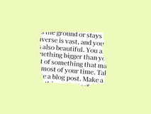

Digit Recognition Application
An app to automatically classify the MNIST handwritten by Convolution Neural Network (CNN). It helps you identify accurately number from unclear handwritten.
Tools used: Python (FastAPI), Heroku, Docker
Category: Classification, Deep Learning
|
|
Dog Breed Identification
Used transfer learning to identify the breed of a dog, or find the dog that looks like you.
Tools used: Python, OpenCV
Category: Classification, Deep Learning
|
|
Movie Recommendation System
Built a movie recommendation system using graph embedding and comparing performance with other recommender techniques.
Tools used: Python, Node2vec
Category: Classification, Graph Embedding
|
|
Predict patient survival 24hrs after admitting to ICU
Evaluated different tree-model algorithms on a dataset including features from various vital signs and lab test results.
Tools used: Python (Tree ensembles, SHAP)
Category: Classification, Machine Learning
|
|
Forest fire predictor
Identified the different chance forest fire areas and visualized the interactions between groups and seasons within them.
Tools used: Python (Streamlit, SHAP)
Category: Interpretability, Classification, Machine Learning
|
|
Text summarizer
Deployed an app to perform extractive summarization on long text or lists of web articles from user input.
Tools used: Python (FastAPI, Gensim, Transformers), AWS
Category: NLP
|
 |
Yoga styles
Used transfer learning to classify the style of yoga.
Tools used: Python (FastAPI), Docker, AWS
Category: Classification, Deep Learning
|
|
Customer Segmentation
Analyzed and segmented household level transactions through K-means and t-SNE. Made market basket analysis to pair of products and identified patterns of co-occurrence.
Tools used: Python, Tableau
Category: Clustering, Market Basket Analysis
|
|